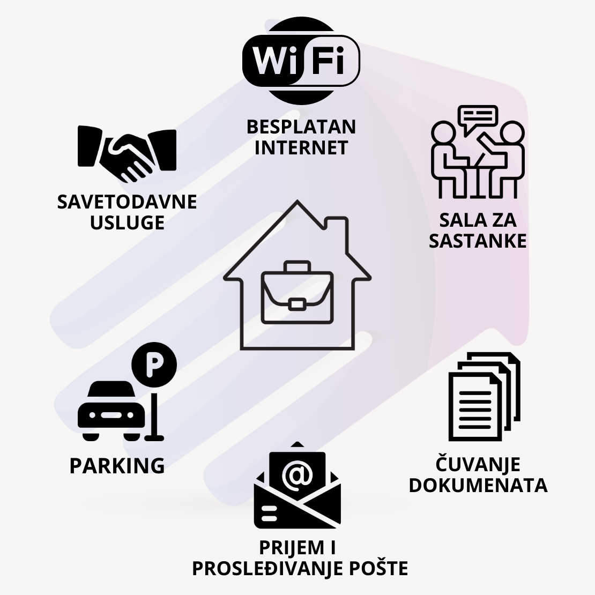

Biznis Inkubator u Kruševcu u svojoj podršci savremenom poslovanju nudi inovativni koncept pokretanja virtuelnog kancelarijskog poslovanja pod nazivom USLUŽNO SEDIŠTE FIRME-VIRTUELNA KANCELARIJA.
Internet u savremenom dobu nam nudi mogućnost da veliki broj poslova obavljamo online, pri čemu saradnici na poslu ili klijenti ne moraju biti fizički na istom mestu.
Povoljnosti Korišćenja Virtuelne Kancelarije
Delatnost firme ne mora da se obavlja na određenoj fizičkoj lokaciji, ali po zakonu i dalje svaki privredni subjekt mora da ima registrovanu adresu sedišta za kontakt sa državnim organima i poslovnim partnerima. Praktično je imati sedište na jednoj istoj adresi bez obzira na to koliko se puta promeni adresa stanovanja ili rada.
Na našoj adresi moguće je da registrujete sedište firme u Srbiji.
USLUŽNO SEDIŠTE FIRME-VIRTUELNA KANCELARIJA je administrativna podrška koja znatno olakša poslovanje i omogućava klijentima da svoje vreme posvetite onome u čemu su najbolji. Biznis Inkubator u Kruševcu nudi preduzetnicima pakete usluga u dva nivoa.
OSNOVNI PAKET obuhvata sledeće usluge :
- Zakup poslovne adrese - mogućnost registracije sedišta firme na adresi Biznis Inkubatora u Kruševcu
- Savetodavne usluge u procesu osnivanja pravnog
lica
- Prijem fizičke i elektronske pošte i njeno dalje prosleđivanje
- Fleksibilno mesto za rad
- Korišćenje free WiFi interneta
- Čuvanje dokumenata
- Mogućnost korišćenja male sale za sastanke
površine 24m² sa konferencijskim stolom za 10 osoba
- Mogućnost korišćenja medija centara površine 107m² sa 40 mesta. Moderna oprema koju čine “pametna tabla” (smart board), projektori sa platnima i LCD televizor
omogućava sve vrste prezentacija, edukacija, seminara i sličnih poslovnih dešavanja u prostoru medija centara. Savremeni video conference system, opremljen široko ugaonom kamerom i mikrofonima, omogućava učešće ili
organizovanje online obuka i video konferencijskih sastanaka sa učesnicima koji se nalaze bilo gde u svetu
- Korišćenje kompletno opremljene čajne kuhinje
- Veliki parking za zaposlene i klijente
- Usluge
dnevnog čišćenja i održavanja higijene prostorija
- Pristup zajedničkim prostorijama: holovima, toaletima i terasi
PROŠIRENI PAKET obuhvata sledeće usluge:
- Mogućnost organizovanja prigodnog keteringa kao deo poslovne prezentacije
- Komunikaciju sa državnim organima i javnim ustanovama
- Knjigovodstvene
usluge
- Dizajn logotipa vaše firme
- Usluge grafičkog dizajna
- Izrada websajta
Prostor u kome se obavlja poslovna aktivnosti je svakako deo imidža koji gradite među poslovnim saradnicima i klijentima. Biznis Inkubator je kompletno opremljen objekat površine 1630m2 sa velikim prijemnim holom i širokim hodnicima. Moderni prostori za poslovanje poseduju kompletnu tehničku opremljenost i najmodernije alate za rad. Ceo objekat je opremljen sigurnosnim kamerama i javljačima požara.
Osećaj koji se u klijentima i saradnicima probuditi kada uđu u naš/vaš poslovni prostor u velikoj meri može biti presudan faktor za uspešnost saradnje i stvaranje odnosa, a to naravno nadalje može uticati na to da steknete nove klijente ili pridobijete i zadržite kvalitetan kadar.
Virtuelno kancelarijsko poslovanje se pokazalo kao praktično rešenje koje racionalizuje resurse. Korišćenjem naše ponude koju smo nazvali USLUŽNO SEDIŠTE FIRME-VIRTUELNA KANCELARIJA poslujete efikasno gde god da se nalazite bez troškova tradicionalnog kancelarijskog prostora.
Cena osnovnog paketa USLUŽNO SEDIŠTE FIRME-VIRTUELNA KANCELARIJA je 5.000 dinara na mesečnom nivou. Prošireni paket se dogovara sa klijentom u zavisnosti od njegovih potreba. Preduzetnici i vlasnici firmi koji posluju u inostranstvu uslugu osnovnog paketa plaćaju 12.000 dinara na mesečnom nivou.
Za ovaj vid poslovanja su se već odlučili mnogi, a praksa pokazuje da su to najčešće:
- IT i consulting kompanije
- preduzetnici ili pravna lica koji posluju isključivo preko interneta
- nove domaće i
inostrane firme koje se probijaju na tržištu
- start up projekti koji žele da registruju sedište svoje firme na atraktivnoj lokaciji
- firme koje imaju mali broj zaposlenih
- firme koja imaju veliki broj
zaposlenih, ali se nalaze na različitim krajevima grada ili žive u različitim gradovima ili državama
- firme koje imaju samo sedište u našem gradu, a poslove obavljaju u drugom gradu ili državi
- mali biznisi
i sl.
Kontaktirajte nas
- Putem info linije 037/315-03-33